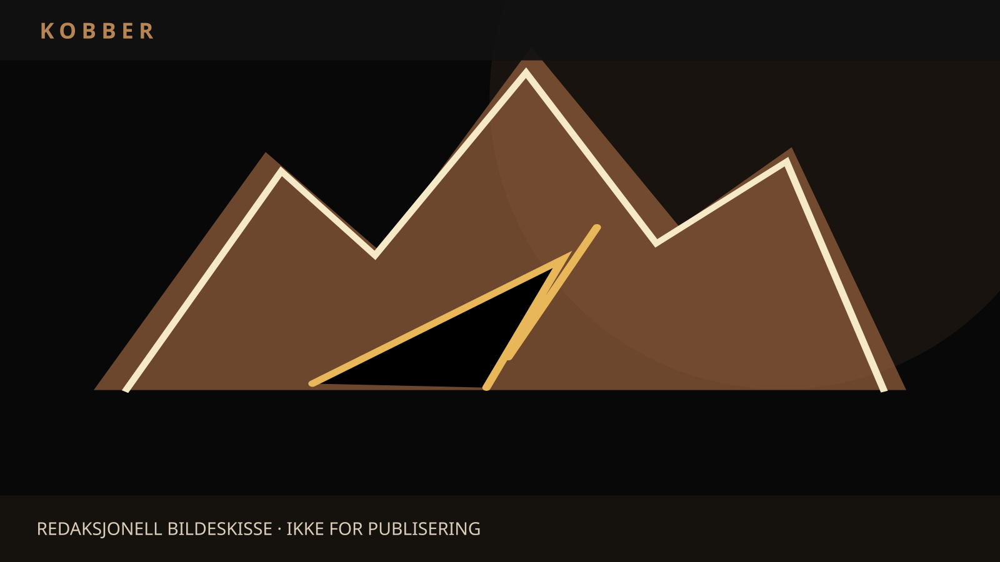

NYHETER / NORGE / POLITIKK
Kampen om Nussir: Hvem skal eie kobberet under Finnmark?
Et planlagt oppkjøp av den strategisk viktige Nussir-gruven har utløst en ny strid om nasjonal kontroll. Flere stortingspolitikere vil vite hvilke sikkerhetsvurderinger regjeringen har gjort. Kjøperselskapet avviser at det representerer russiske interesser.

Kobberet i Finnmark er ettertraktet av langt flere enn dem som vil bygge en gruve. Det trengs i kraftnett og elektronikk, og regnes også som strategisk for europeisk industri og forsvar. Nettopp derfor har et planlagt kjøp av Nussir-gruven skapt spørsmål om hvem som bør kontrollere viktige mineralressurser.
Kilder: Stortinget, skriftlig spørsmål innlevert 10. november 2026; VG, 11. november – MDG vil stanse kjøpet.
Ifølge VG vil det britiske selskapet ACG Metals overta Nussir i en handel på rundt to milliarder kroner. Selskapets toppsjef, Artem Volynets, har tidligere hatt ledende stillinger i selskaper tilknyttet russiske oligarker. Det er et dokumentert forhold i hans yrkesbakgrunn, men er ikke i seg selv dokumentasjon for at det planlagte oppkjøpet styres av Russland.
Politikerne etterlyser svar
MDG vil stanse prosessen mens sikkerhetsspørsmålene blir undersøkt. Andre stortingspolitikere har bedt regjeringen redegjøre for hvilke vurderinger som er gjort. I et skriftlig spørsmål innlevert 10. november spør Frps Sylvi Listhaug om regjeringen har rådført seg med NSM, PST eller andre sikkerhetsmyndigheter, og om hjemlene i mineralloven og sikkerhetsloven er vurdert. Spørsmålet var til behandling da denne teksten ble utarbeidet.
Kilder: Stortinget, skriftlig spørsmål innlevert 10. november 2026; VG, 11. november – MDG vil stanse kjøpet.
Næringsminister Cecilie Myrseth sier til VG at det ikke foreligger vurderinger som tilsier at staten bør gripe inn i salget. Samtidig ønsker hun ikke å offentliggjøre alle detaljene om hvem som er kontrollert eller hva vurderingene omfatter. At myndighetene ikke deler opplysninger, beviser verken at vurderingene er mangelfulle eller at alle mulige risikoer er avklart.
Kjøperen bestrider mistankene
Volynets bekrefter overfor VG tidligere arbeid i selskaper knyttet til russiske oligarker, men avviser nåværende økonomiske eller forretningsmessige forbindelser til dem. Han understreker at ACG Metals er britisk børsnotert, har uavhengig styre og internasjonale eiere. Han sier også at han ønsker en vurdering av etterprøvbare fakta fremfor antakelser om bakgrunnen hans.
Det er vesentlig å skille disse standpunktene. Selskapets egen beskrivelse er et partsinnlegg og bør kontrolleres mot eierregistre og selskapsdokumenter. Samtidig er politiske bekymringer ikke en rettslig konklusjon. Et slikt skille er nødvendig for en ryddig diskusjon om utenlandske investeringer.
Kilder: Stortinget, skriftlig spørsmål innlevert 10. november 2026; VG, 10. november – selskapets og regjeringens svar.
En konflikt større enn eierskapet
Nussir-prosjektet reiser også spørsmål om natur, sjødeponi, samiske interesser og reindrift. Havforskningsinstituttet har levert innspill til avfallshåndteringsplanen og omtaler tillatelse til å deponere opptil to millioner tonn gruveavfall årlig i Repparfjorden. Det er en tillatelsesramme, ikke opplysninger om at slike mengder allerede er deponert. Disse spørsmålene blir ikke borte om eierskapet vurderes som sikkerhetspolitisk uproblematisk. Og et mulig sikkerhetspolitisk problem kan ikke alene avgjøre den lokale miljøkonflikten. Saken rommer flere ulike beslutninger som må begrunnes hver for seg.
Kilder: Stortinget, skriftlig spørsmål innlevert 10. november 2026.
Det store spørsmålet er hvordan Norge skal sikre både industriell utvikling og demokratisk kontroll over kritiske råvarer. Svaret krever innsyn i transaksjonen, forholdet mellom eierne og kjøperens faktiske kontroll, og vurderinger som tåler offentlig etterprøving i den grad sikkerhetsregler tillater det. Inntil da er det mest presist å omtale Nussir som et omstridt planlagt oppkjøp – ikke en fastslått sikkerhetstrussel.
Kilder og dokumentasjon
- Havforskningsinstituttet, 20. mars 2026 – høringssvar om avfallshåndtering i Repparfjorden
- Stortinget, skriftlig spørsmål innlevert 10. november 2026
- VG, 11. november – MDG vil stanse kjøpet
- VG, 10. november – selskapets og regjeringens svar
- VG, 11. november – næringsministerens vurdering
Denne teksten er basert på tilgjengelige dokumenter og redaktørstyrt dekning. Selvstendig intervjuer, hovedbilde, sekundærbilde ved behov og redaksjonell publiseringskontroll gjenstår.